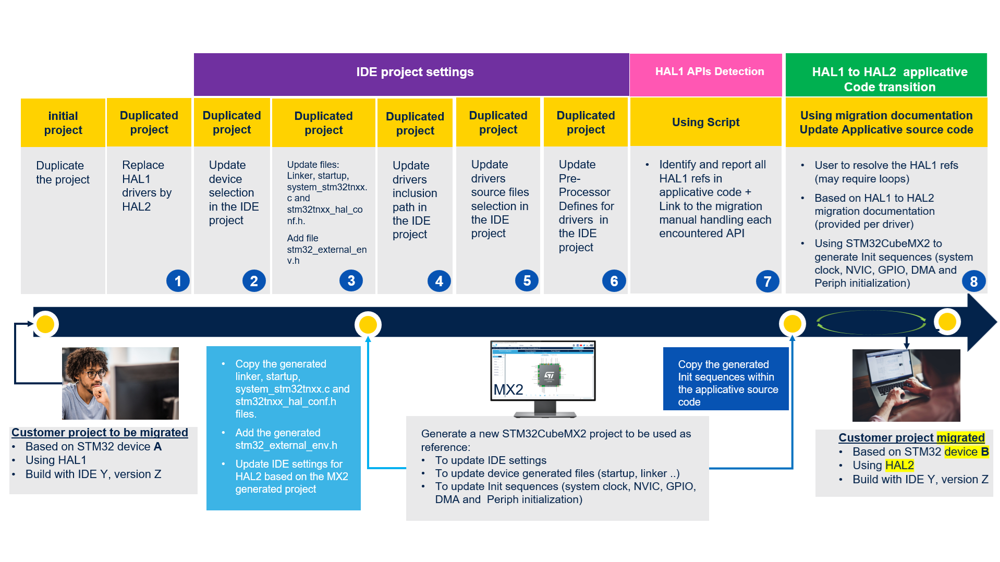

Copyright © 2025 STMicroelectronics
The STM32Cube HAL (hardware abstraction layer) has undergone significant improvements in its latest version, enhancing performance, resource usage, and ease of use. However, these enhancements come with breaking changes that may affect the compatibility of your existing applications. The migration material is designed to assist you in navigating these changes and successfully migrating your application to STM32Cube HAL2.

The components flagged by “” have changed since the previous release.
“” are new. “⏳” Documentation not yet ready.
| Module | HAL1 automatic detection and logging script | HAL1 to HAL2 migration user guides (documentation) |
|---|---|---|
| ADC | ✅ Fully supported | ✅ Fully supported |
| CAN ⏳ | ✅ Fully supported | ❌ Not supported |
| CEC ⏳ | ✅ Fully supported | ❌ Not supported |
| COMP | ✅ Fully supported | ✅ Fully supported |
| CORDIC | ✅ Fully supported | ✅ Fully supported |
| CORTEX | ✅ Fully supported | ✅ Fully supported |
| CRC | ✅ Fully supported | ✅ Fully supported |
| CRS ⏳ | ✅ Fully supported | ❌ Not supported |
| CRYP | ✅ Fully supported | ✅ Fully supported |
| DAC | ✅ Fully supported | ✅ Fully supported |
| DCACHE | ✅ Fully supported | ✅ Fully supported |
| DCMI ⏳ | ✅ Fully supported | ❌ Not supported |
| DFSDM ⏳ | ✅ Fully supported | ❌ Not supported |
| DLYB ⏳ | ✅ Fully supported | ❌ Not supported |
| DMA | ✅ Fully supported | ✅ Fully supported |
| DMA2D ⏳ | ✅ Fully supported | ❌ Not supported |
| DSI ⏳ | ✅ Fully supported | ❌ Not supported |
| DTS ⏳ | ✅ Fully supported | ❌ Not supported |
| ETH ⏳ | ✅ Fully supported | ❌ Not supported |
| EXTI | ✅ Fully supported | ✅ Fully supported |
| FDCAN ⏳ | ✅ Fully supported | ❌ Not supported |
| FIREWALL ⏳ | ✅ Fully supported | ❌ Not supported |
| FLASH ⏳ | ✅ Fully supported | ❌ Not supported |
| FMAC | ✅ Fully supported | ✅ Fully supported |
| GENERIC/COMMON | ✅ Fully supported | ✅ Fully supported |
| GFXMMU | ✅ Fully supported | ✅ Fully supported |
| GFXTIM | ✅ Fully supported | ✅ Fully supported |
| GPIO | ✅ Fully supported | ✅ Fully supported |
| GTZC ⏳ | ✅ Fully supported | ❌ Not supported |
| HASH ⏳ | ✅ Fully supported | ❌ Not supported |
| HCD ⏳ | ✅ Fully supported | ❌ Not supported |
| HRTIM ⏳ | ✅ Fully supported | ❌ Not supported |
| I2C | ✅ Fully supported | ✅ Fully supported |
| I2S | ✅ Fully supported | ✅ Fully supported |
| I3C ⏳ | ✅ Fully supported | ❌ Not supported |
| ICACHE | ✅ Fully supported | ✅ Fully supported |
| IRDA | ✅ Fully supported | ✅ Fully supported |
| IWDG | ✅ Fully supported | ✅ Fully supported |
| JPEG ⏳ | ✅ Fully supported | ❌ Not supported |
| LCD ⏳ | ✅ Fully supported | ❌ Not supported |
| LPTIM | ✅ Fully supported | ✅ Fully supported |
| LPUART | ✅ Fully supported | ✅ Fully supported |
| LTDC ⏳ | ✅ Fully supported | ❌ Not supported |
| MDF ⏳ | ✅ Fully supported | ❌ Not supported |
| MMC ⏳ | ✅ Fully supported | ❌ Not supported |
| NAND ⏳ | ✅ Fully supported | ❌ Not supported |
| NOR | ✅ Fully supported | ✅ Fully supported |
| OPAMP | ✅ Fully supported | ✅ Fully supported |
| OSPI | ✅ Fully supported | ✅ Fully supported |
| OTFDEC ⏳ | ✅ Fully supported | ❌ Not supported |
| PCCARD ⏳ | ✅ Fully supported | ❌ Not supported |
| PCD ⏳ | ✅ Fully supported | ❌ Not supported |
| PKA | ✅ Fully supported | ✅ Fully supported |
| PSSI ⏳ | ✅ Fully supported | ❌ Not supported |
| PWR | ✅ Fully supported | ✅ Fully supported |
| QSPI | ✅ Fully supported | ✅ Fully supported |
| RAMCFG | ✅ Fully supported | ✅ Fully supported |
| RCC | ✅ Fully supported | ✅ Fully supported |
| RNG | ✅ Fully supported | ✅ Fully supported |
| RTC | ✅ Fully supported | ✅ Fully supported |
| SAI ⏳ | ✅ Fully supported | ❌ Not supported |
| SD ⏳ | ✅ Fully supported | ❌ Not supported |
| SDIO ⏳ | ✅ Fully supported | ❌ Not supported |
| SDRAM | ✅ Fully supported | ✅ Fully supported |
| SMARTCARD | ✅ Fully supported | ✅ Fully supported |
| SMBUS | ✅ Fully supported | ✅ Fully supported |
| SPDIFRX ⏳ | ✅ Fully supported | ❌ Not supported |
| SPI | ✅ Fully supported | ✅ Fully supported |
| SRAM | ✅ Fully supported | ✅ Fully supported |
| SWPMI ⏳ | ✅ Fully supported | ❌ Not supported |
| TIM | ✅ Fully supported | ✅ Fully supported |
| TSC ⏳ | ✅ Fully supported | ❌ Not supported |
| UART | ✅ Fully supported | ✅ Fully supported |
| USART | ✅ Fully supported | ✅ Fully supported |
| WWDG | ✅ Fully supported | ✅ Fully supported |
| XSPI | ✅ Fully supported | ✅ Fully supported |
The components flagged by “” have changed since the previous release.
“” are new. “⏳” Documentation not yet ready.
| Module | HAL1 automatic detection and stubbing script and logging | HAL1 to HAL2 migration user guides (documentation) |
|---|---|---|
| ADC | ✅ Fully supported | ✅ Fully supported |
| CAN ⏳ | ✅ Fully supported | ❌ Not supported |
| CEC ⏳ | ✅ Fully supported | ❌ Not supported |
| COMP | ✅ Fully supported | ✅ Fully supported |
| CORDIC ⏳ | ✅ Fully supported | ❌ Not supported |
| CORTEX | ✅ Fully supported | ✅ Fully supported |
| CRC | ✅ Fully supported | ✅ Fully supported |
| CRS ⏳ | ✅ Fully supported | ❌ Not supported |
| CRYP | ✅ Fully supported | ✅ Fully supported |
| DAC | ✅ Fully supported | ✅ Fully supported |
| DCACHE ⏳ | ✅ Fully supported | ❌ Not supported |
| DCMI ⏳ | ✅ Fully supported | ❌ Not supported |
| DFSDM ⏳ | ✅ Fully supported | ❌ Not supported |
| DLYB ⏳ | ✅ Fully supported | ❌ Not supported |
| DMA | ✅ Fully supported | ⚠️ Partially supported |
| DMA2D ⏳ | ✅ Fully supported | ❌ Not supported |
| DSI ⏳ | ✅ Fully supported | ❌ Not supported |
| DTS ⏳ | ✅ Fully supported | ❌ Not supported |
| ETH ⏳ | ✅ Fully supported | ❌ Not supported |
| EXTI | ✅ Fully supported | ✅ Fully supported |
| FDCAN ⏳ | ✅ Fully supported | ❌ Not supported |
| FIREWALL ⏳ | ✅ Fully supported | ❌ Not supported |
| FLASH ⏳ | ✅ Fully supported | ❌ Not supported |
| FMAC ⏳ | ✅ Fully supported | ❌ Not supported |
| GENERIC/COMMON | ✅ Fully supported | ✅ Fully supported |
| GFXMMU ⏳ | ✅ Fully supported | ❌ Not supported |
| GFXTIM ⏳ | ✅ Fully supported | ❌ Not supported |
| GPIO | ✅ Fully supported | ✅ Fully supported |
| GTZC ⏳ | ✅ Fully supported | ❌ Not supported |
| HASH ⏳ | ✅ Fully supported | ❌ Not supported |
| HCD ⏳ | ✅ Fully supported | ❌ Not supported |
| HRTIM ⏳ | ✅ Fully supported | ❌ Not supported |
| I2C | ✅ Fully supported | ✅ Fully supported |
| I2S ⏳ | ✅ Fully supported | ❌ Not supported |
| I3C ⏳ | ✅ Fully supported | ❌ Not supported |
| ICACHE | ✅ Fully supported | ✅ Fully supported |
| IRDA ⏳ | ✅ Fully supported | ❌ Not supported |
| IWDG | ✅ Fully supported | ✅ Fully supported |
| JPEG ⏳ | ✅ Fully supported | ❌ Not supported |
| LCD ⏳ | ✅ Fully supported | ❌ Not supported |
| LPTIM ⏳ | ✅ Fully supported | ❌ Not supported |
| LPUART ⏳ | ✅ Fully supported | ❌ Not supported |
| LTDC ⏳ | ✅ Fully supported | ❌ Not supported |
| MDF ⏳ | ✅ Fully supported | ❌ Not supported |
| MMC ⏳ | ✅ Fully supported | ❌ Not supported |
| NAND ⏳ | ✅ Fully supported | ❌ Not supported |
| NOR ⏳ | ✅ Fully supported | ❌ Not supported |
| OPAMP ⏳ | ✅ Fully supported | ❌ Not supported |
| OSPI ⏳ | ✅ Fully supported | ❌ Not supported |
| OTFDEC ⏳ | ✅ Fully supported | ❌ Not supported |
| PCCARD ⏳ | ✅ Fully supported | ❌ Not supported |
| PCD ⏳ | ✅ Fully supported | ❌ Not supported |
| PKA ⏳ | ✅ Fully supported | ❌ Not supported |
| PSSI ⏳ | ✅ Fully supported | ❌ Not supported |
| PWR | ✅ Fully supported | ✅ Fully supported |
| QSPI ⏳ | ✅ Fully supported | ❌ Not supported |
| RAMCFG ⏳ | ✅ Fully supported | ❌ Not supported |
| RCC | ✅ Fully supported | ✅ Fully supported |
| RNG | ✅ Fully supported | ✅ Fully supported |
| RTC | ✅ Fully supported | ✅ Fully supported |
| SAI ⏳ | ✅ Fully supported | ❌ Not supported |
| SD ⏳ | ✅ Fully supported | ❌ Not supported |
| SDIO ⏳ | ✅ Fully supported | ❌ Not supported |
| SDRAM ⏳ | ✅ Fully supported | ❌ Not supported |
| SMARTCARD ⏳ | ✅ Fully supported | ❌ Not supported |
| SMBUS ⏳ | ✅ Fully supported | ❌ Not supported |
| SPDIFRX ⏳ | ✅ Fully supported | ❌ Not supported |
| SPI | ✅ Fully supported | ✅ Fully supported |
| SRAM ⏳ | ✅ Fully supported | ❌ Not supported |
| SWPMI ⏳ | ✅ Fully supported | ❌ Not supported |
| TIM | ✅ Fully supported | ✅ Fully supported |
| TSC ⏳ | ✅ Fully supported | ❌ Not supported |
| UART | ✅ Fully supported | ✅ Fully supported |
| UCPD ⏳ | ✅ Fully supported | ❌ Not supported |
| USART | ✅ Fully supported | ✅ Fully supported |
| USB ⏳ | ✅ Fully supported | ❌ Not supported |
| WWDG | ✅ Fully supported | ✅ Fully supported |
| XSPI ⏳ | ✅ Fully supported | ❌ Not supported |
As an Alpha release, it does not implement all features and has not been fully validated
HAL1 automatic detection and stubbing script
Initial HAL1 to HAL2 migration materials with multi-series support
| Module | HAL automatic detection and stubbing script | HAL automatic detection and stubbing logging | HAL1 to HAL2 migration user guide |
|---|---|---|---|
| ADC | ✅ Fully supported | ✅ Fully supported | ✅ Fully supported |
| CORTEX | ✅ Fully supported | ✅ Fully supported | ✅ Fully supported |
| DMA | ⚠️ Partially supported | ❌ Not supported | ❌ Not supported |
| GENERIC/COMMON | ✅ Fully supported | ✅ Fully supported | ✅ Fully supported |
| GPIO | ✅ Fully supported | ✅ Fully supported | ✅ Fully supported |
| ICACHE | ✅ Fully supported | ❌ Not supported | ❌ Not supported |
| I2C | ⚠️ Partially supported | ⚠️ Partially supported | ⚠️ Partially supported |
| PWR | ⚠️ Partially supported | ❌ Not supported | ❌ Not supported |
| RCC | ✅ Fully supported | ❌ Not supported | ⚠️ Partially supported |
| TIM | ✅ Fully supported | ✅ Fully supported | ⚠️ Partially supported |
As an Alpha release, it does not implement all features and has not been fully validated
LL drivers migration not yet supported
HAL1 automatic detection and stubbing script